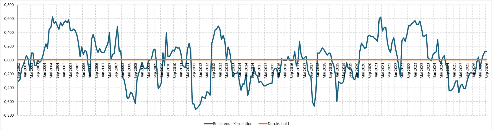

Edelmetalle
Gold und Silber als Geldanlage verstehen: Welche Chancen und Risiken bieten Edelmetalle und wie können sie ein Portfolio sinnvoll ergänzen?
Edelmetalle verstehen
Edelmetalle sind seltene, natürlich vorkommende Metalle, die sich durch ihre besonderen chemischen und physikalischen Eigenschaften auszeichnen. Sie sind beispielsweise besonders korrosionsbeständig, langlebig und teilweise hervorragende elektrische Leiter. Dadurch werden sie sowohl in der Schmuckindustrie als auch in technischen und industriellen Anwendungen eingesetzt.
Zu den bekanntesten Edelmetallen gehören Gold, Silber, Platin und Palladium. Während Gold und Silber seit Jahrtausenden als Wertaufbewahrungsmittel und Zahlungsmittel genutzt werden, spielen Platin und Palladium insbesondere in der Industrie eine wichtige Rolle.
Edelmetalle als Geldanlage
Nicht jedes Edelmetall eignet sich gleichermaßen als Anlageform. Entscheidend sind unter anderem die weltweite Nachfrage, die Handelbarkeit, die Verfügbarkeit und die Möglichkeiten zur sicheren Aufbewahrung.
- Gold: Gilt als klassisches Anlagemetall und wird häufig zur langfristigen Vermögenssicherung und Diversifikation eingesetzt.
- Silber: Vereint die Eigenschaften eines Anlagemetalls mit einer hohen industriellen Nachfrage, beispielsweise in der Elektronik und Photovoltaik.
- Platin: Wird unter anderem in der Automobilindustrie, Chemieindustrie und Schmuckherstellung verwendet. Seine Preisentwicklung hängt stark von industrieller Nachfrage und Angebot ab.
- Palladium: Findet vor allem in Abgaskatalysatoren Verwendung und reagiert entsprechend empfindlich auf Veränderungen in der Automobilindustrie.
Anders als Aktien oder Anleihen erwirtschaften physische Edelmetalle keine laufenden Erträge in Form von Dividenden oder Zinsen. Ihre Rendite entsteht ausschließlich durch eine mögliche Wertsteigerung, abzüglich anfallender Kosten.
Gold und Silber im Fokus
Für Privatanleger stehen insbesondere Gold und Silber im Mittelpunkt. Beide Metalle sind international handelbar und können sowohl physisch als Münzen oder Barren als auch indirekt über börsengehandelte Produkte erworben werden.
Trotz ihrer Gemeinsamkeiten unterscheiden sie sich deutlich: Während Gold vor allem als langfristiger Wertspeicher und zur Diversifikation eines Portfolios betrachtet wird, ist Silber stärker von der industriellen Nachfrage und der wirtschaftlichen Entwicklung abhängig.
Im Folgenden betrachten wir deshalb beide Edelmetalle genauer: Welche Rolle kann Gold langfristig im Portfolio spielen, warum entwickelt es sich häufig anders als Aktien und welche besonderen Chancen und Risiken bringt Silber als Industriemetall mit sich?
Gold als langfristige Geldanlage
Über lange Zeiträume kann Gold Kaufkraft erhalten und als Ergänzung zu Aktien, Anleihen und Liquidität dienen. Eine Garantie für Inflationsschutz in jedem einzelnen Jahr ist das jedoch nicht. Auch längere Phasen fallender oder stagnierender Goldpreise sind möglich.
Was Gold attraktiv macht
- Kein direktes Geschäftsmodell- oder Unternehmensrisiko wie bei Einzelaktien.
- Weltweit handelbarer Sachwert mit breiter Nachfrage.
- Mögliche Stabilisierung des Gesamtportfolios in bestimmten Krisenphasen.
Was Anleger beachten sollten
- Keine laufenden Erträge oder Dividenden.
- Deutliche Kursschwankungen und teils lange Durststrecken.
- Für Euro-Anleger zusätzlich Wechselkurseinflüsse; bei physischem Besitz Lager- und Handelskosten.
Warum korreliert Gold häufig nur schwach mit Aktien?
Aktienkurse hängen stark von Unternehmensgewinnen, Wachstumserwartungen und Bewertungen ab. Gold wird zusätzlich durch Realzinsen, Währungen, Zentralbankkäufe, geopolitische Unsicherheit und die Nachfrage nach sicheren Anlagen beeinflusst. Deshalb reagieren Gold und Aktien nicht immer auf dieselben Ereignisse.
In wirtschaftlich guten Zeiten können beide steigen. In ausgeprägten Stressphasen suchen Anleger dagegen teilweise Schutz in Gold, während Aktien fallen. Die Korrelation ist also nicht dauerhaft null oder negativ, sondern verändert sich je nach Marktumfeld.
Gold und S&P 500 – historische Korrelation
Die Korrelation zwischen Gold und Aktien verändert sich im Zeitverlauf. Positive Werte stehen für gleichgerichtete, negative Werte für gegenläufige Renditebewegungen.

Die Korrelation beschreibt, wie stark sich die Renditen zweier Anlagen gemeinsam bewegen. Sie schwankt im Zeitverlauf und ist nicht dauerhaft negativ.
Silber: Warum die industrielle Nachfrage wichtig ist
Silber ist zugleich Edelmetall und wichtiger Rohstoff. Unter anderem in Solarzellen, elektrischen Kontakten und Elektronik wird es wegen seiner Leitfähigkeit verwendet. Steigt die industrielle Nachfrage, kann das den Preis unterstützen. Schwächt sich die Wirtschaft ab, kann derselbe Zusammenhang jedoch belasten.
Hinzu kommt: Der Silbermarkt ist kleiner und häufig volatiler als der Goldmarkt. Silber ist deshalb kein gleichwertiger Ersatz für Gold als defensivere Beimischung, sondern eher eine schwankungsreichere Ergänzung.
Industrieanteil an der Nachfrage – Gold und Silber
Anteil der Technologie- und Industrienachfrage an der gesamten weltweiten Nachfrage im Jahr 2025.
Silber: industrielle Nachfrage (657,4 von 1.130,6 Mio. Feinunzen). Gold: Technologie einschließlich Elektronik, sonstiger Industrie und Zahnmedizin (322,8 von 5.002,3 Tonnen). Datenjahr 2025; unterschiedliche Abgrenzung der Nachfragekategorien.
Gold-Silber-Ratio: Was sagt das Preisverhältnis aus?
Die Gold-Silber-Ratio gibt an, wie viele Feinunzen Silber dem Preis einer Feinunze Gold entsprechen. Sie wird berechnet, indem man den Goldpreis je Feinunze durch den Silberpreis je Feinunze teilt – jeweils in derselben Währung.
Eine hohe Ratio bedeutet, dass Silber im Verhältnis zu Gold günstiger bewertet wird; eine niedrige Ratio bedeutet, dass Silber relativ teurer ist. Das ist jedoch keine Aussage darüber, ob eines der Metalle absolut günstig ist.
Einordnung: Die Gold-Silber-Ratio hilft beim historischen Preisvergleich, ist aber kein zuverlässiges Kaufsignal. Es gibt keinen festen fairen Wert, zu dem das Verhältnis zurückkehren muss. Gerade die hohe industrielle Nachfrage kann Silber stärker schwanken lassen.
Wie kann man in Edelmetalle investieren?
| Anlageform | Vorteile | Nachteile |
|---|---|---|
| Münzen und Barren | Direkter physischer Besitz, kein Emittent eines Wertpapiers nötig | Aufbewahrung, Versicherung, Kauf-/Verkaufsspanne |
| Physisch besicherte ETCs | Einfach über das Depot handelbar | Produkt- und Emittentenstruktur, Gebühren, mögliche Auslieferungsbedingungen |
| Goldminenaktien | Unternehmerische Gewinnchancen | Aktien- und Unternehmensrisiken; kein direkter Goldbesitz |
Die steuerliche Behandlung unterscheidet sich je nach Produkt. Insbesondere ein Anspruch auf physische Auslieferung kann bei bestimmten Gold-ETCs relevant sein. Mehr zu Haltefristen, Gold, Silber und ETCs auf der Steuerseite →